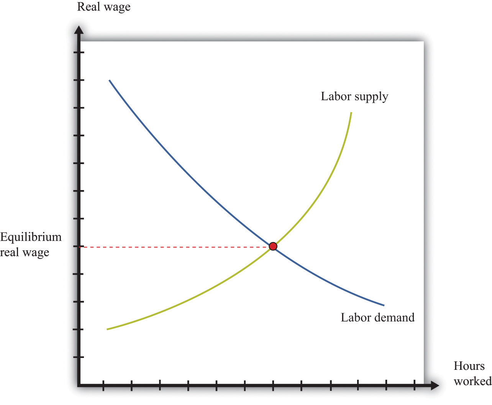
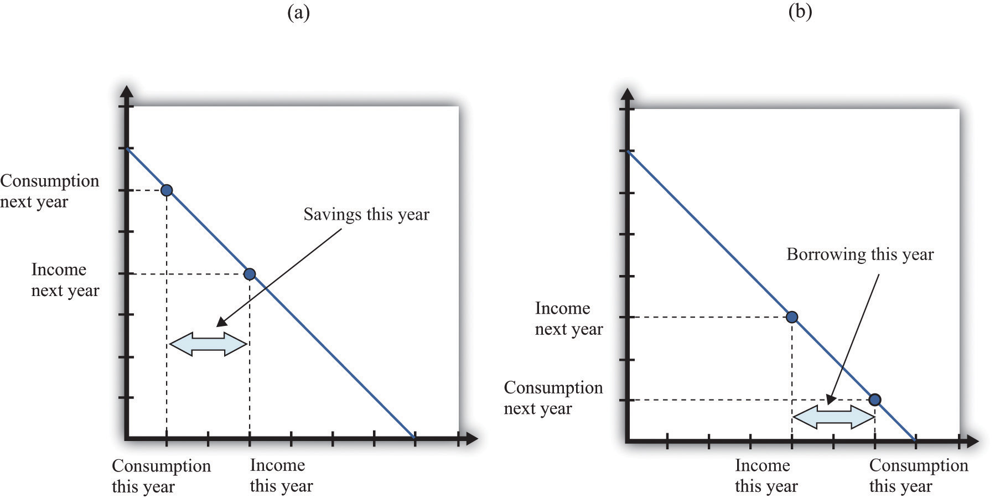
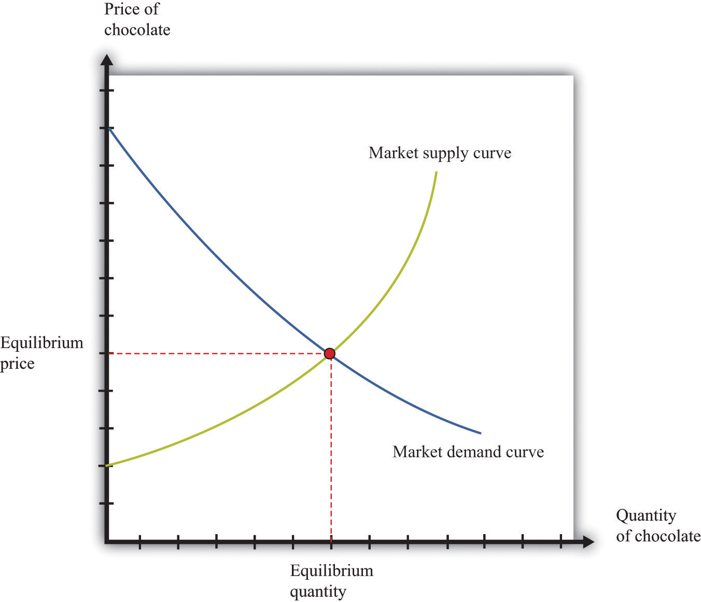
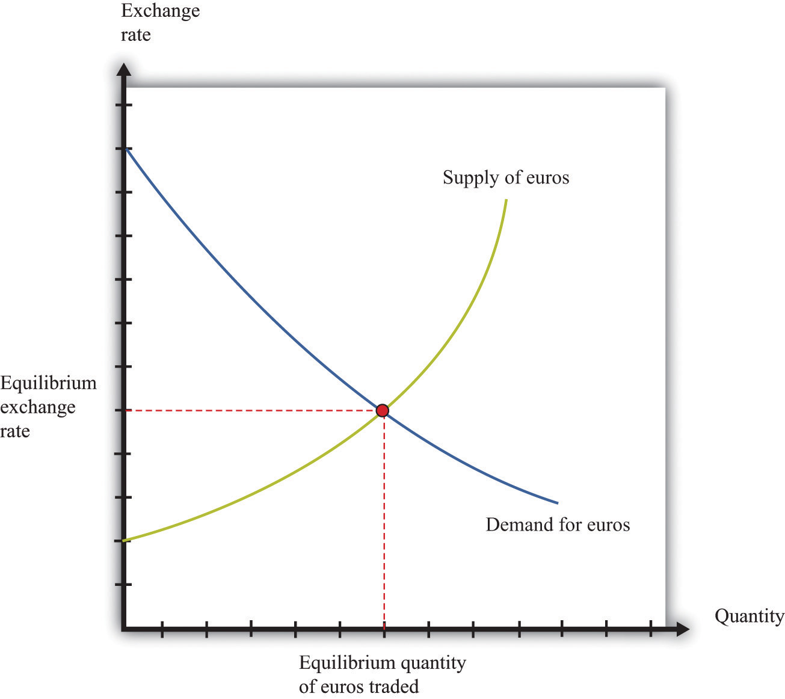

In this chapter we present the key tools used in the microeconomics part of this textbook. This toolkit serves two main functions:
Individual demand refers to the demand for a good or a service by an individual (or a household). Individual demand comes from the interaction of an individual’s desires with the quantities of goods and services that he or she is able to afford. By desires, we mean the likes and dislikes of an individual. We assume that the individual is able to compare two goods (or collections of goods) and say which is preferred. We assume two things: (1) an individual prefers more to less and (2) likes and dislikes are consistent.
An example is shown in part (a) of Figure 17.1 "Individual Demand". (This example is taken from Chapter 3 "Everyday Decisions".) In this example, there are two goods: music downloads ($1 each) and chocolate bars ($5 each). The individual has income of $100. The budget line is the combination of goods and services that this person can afford if he spends all of his income. In this example, it is the solid line connecting 100 downloads and 20 chocolate bars. The horizontal intercept is the number of chocolate bars the individual could buy if all income was spent on chocolate bars and is income divided by the price of a chocolate bar. The vertical intercept is the number of downloads the individual could buy if all income was spent on downloads and is income divided by the price of a download. The budget set is all the combinations of goods and services that the individual can afford, given the prices he faces and his available income. In the diagram, the budget set is the triangle defined by the budget line and the horizontal and vertical axes.
An individual’s preferred point is the combination of downloads and chocolate bars that is the best among all of those that are affordable. Because an individual prefers more to less, all income will be spent. This means the preferred point lies on the budget line. The most that an individual would be willing to pay for a certain quantity of a good (say, five chocolate bars) is his valuation for that quantity. The marginal valuation is the most he would be willing to pay to obtain one extra unit of the good. The decision rule of the individual is to buy an amount of each good such that
marginal valuation = price.The individual demand curve for chocolate bars is shown in part (b) of Figure 17.1 "Individual Demand". On the horizontal axis is the quantity of chocolate bars. On the vertical axis is the price. The demand curve is downward sloping: this is the law of demand. As the price of a chocolate bar increases, the individual substitutes away from chocolate bars to other goods. Thus the quantity demanded decreases as the price increases.
In some circumstances, the individual’s choice is a zero-one decision: either purchase a single unit of the good or purchase nothing. The unit demand curve shows us the price at which a buyer is willing to buy the good. This price is the same as the buyer’s valuation of the good. At any price above the buyer’s valuation, the individual will not want to buy the good. At any price below the buyer’s valuation, the individual wants to buy the good. If this price is exactly equal to the buyer’s valuation, then the buyer is indifferent between purchasing the good or not.
In other words, the individual’s decision rule is to purchase the good if the valuation of the good exceeds its price. This is consistent with the earlier condition because the marginal valuation of the first unit is the same as the valuation of that unit. The difference between the valuation and the price is the buyer surplus. (See Section 17.10 "Buyer Surplus and Seller Surplus" for more discussion.)
Let pd be the price of a download, pc the price of a chocolate bar, and I the income of an individual. Think of prices and income in terms of dollars. Then the budget set is the combinations of downloads (d) and chocolate bars (c) such that
I ≥ pd × d + pc × c.The budget line is the combinations of d and c such that
I = pd × d + pc × c.In the graph, with downloads on the vertical axis, the equation for the budget line is
You can use this equation to understand how changes in income and prices change the position of the budget line. You can also use this equation to find the vertical and horizontal intercepts of the budget line, along with the slope of −(pc/pd).
The individual purchases downloads up to the point where
MVd = pd(where MV represents marginal valuation) and purchases chocolate bars up to the point where
MVc = pc.Combining these expressions we get
which tells us that (minus) the ratio of marginal valuations equals the slope of the budget line. The ratio of marginal valuations is the rate at which an individual would like to trade one good for the other. The ratio of prices (the slope of the budget line) is the rate at which the market allows an individual to make these trades.
Figure 17.1 Individual Demand

Elasticity measures the proportionate change in one variable relative to the change in another variable. Consider, for example, the response of the quantity demanded to a change in the price. The price elasticity of demand is the percentage change in the quantity demanded divided by the percentage change in the price:
When the price increases (the percentage change in the price is positive), the quantity decreases, meaning that the percentage change in the quantity is negative. In other words, the law of demand tells us that the elasticity of demand is a negative number. For this reason we often use −(elasticity of demand) because we know this will always be a positive number.
We can use the idea of the elasticity of demand whether we are thinking about the demand curve faced by a firm or the market demand curve. The definition is the same in either case.
If we are analyzing the demand curve faced by a firm, then we sometimes refer to the elasticity of demand as the own-price elasticity of demand. It tells us how much the quantity demanded changes when the firm changes its price. If we are analyzing a market demand curve, then the price elasticity of demand tells us how the quantity demanded in the market changes when the price changes. Similarly, the price elasticity of supply tells us how the quantity supplied in a market changes when the price changes. The price elasticity of supply is generally positive because the supply curve slopes upward.
The income elasticity of demand is the percentage change in the quantity demanded divided by the percentage change in income. The income elasticity of demand for a good can be positive or negative.
The cross-price elasticity of demand tells us how the quantity demanded of one good changes when the price of another good changes.
In general, we can use elasticity whenever we want to show how one variable responds to changes in another variable.
The labor market is the market in which labor services are traded. Individual labor supply comes from the choices of individuals or households about how to allocate their time. As the real wage (the nominal wage divided by the price level) increases, households supply more hours to the market, and more households decide to participate in the labor market. For both of these reasons, the quantity of labor supplied increases. The labor supply curve of a household is shifted by changes in wealth. A wealthier household supplies less labor at a given real wage.
Labor demand comes from firms. As the real wage increases, the marginal cost of hiring more labor increases, so each firm demands fewer hours of labor input—that is, a firm’s labor demand curve is downward sloping. The labor demand curve of a firm is shifted by changes in productivity. If labor becomes more productive, then the labor demand curve of a firm shifts to the right: the quantity of labor demanded is higher at a given real wage.
The labor market equilibrium is shown in Figure 17.2 "Labor Market Equilibrium". The real wage and the equilibrium quantity of labor traded are determined by the intersection of labor supply and labor demand. At the equilibrium real wage, the quantity of labor supplied equals the quantity of labor demanded.
Figure 17.2 Labor Market Equilibrium
Individuals make decisions that unfold over time. Chapter 4 "Life Decisions" gives several examples. Because individuals choose how to spend income earned over many periods on consumption goods over many periods, they sometimes wish to save or borrow rather than spend all of their income in every period.
Figure 17.3 "Choices over Time" shows examples of these choices over a two-year horizon. The individual earns income this year and next. The combinations of consumption that are affordable and that exhaust all of an individual’s income are shown on the budget line, which in this case is called an intertemporal budget constraint. The slope of the budget line is equal to (1 + real interest rate), which, for convenience, we sometimes call the real interest factor (that is, real interest factor = 1 + real interest rate). The slope is the amount of consumption that can be obtained tomorrow by giving up a unit of consumption today.
The preferred point is indicated in the figure as well. This is the combination of consumption this year and consumption next year that the individual prefers to all the points on the budget line. The individual in part (a) of Figure 17.3 "Choices over Time" is consuming less this year than she is earning: she is saving. Next year she can use her savings and can consume more than her income. The individual in part (b) of Figure 17.3 "Choices over Time" is consuming more this year than he is earning: he is borrowing. Next year, his consumption will be less than his income because he must repay the amount borrowed in the first period.
When the real interest rate increases, individuals will borrow less and (usually) will save more (the effect of interest rate changes on saving is unclear as a matter of theory because income effects and substitution effects act in opposite directions). Thus individual loan supply slopes upward.
Of course, individuals live for many periods and make frequent decisions on consumption and saving. The lifetime budget constraint is obtained using the idea of discounted present value:
discounted present value of lifetime income = discounted present value of lifetime consumption.The left side is a measure of all the disposable income the individual will receive over his lifetime (disposable means after taking into account taxes paid to the government and transfers received from the government). The right side calculates the value of consumption of all goods and services over an individual’s lifetime.
Figure 17.3 Choices over Time
Discounted present value is a technique used to add dollar amounts over time. We need this technique because a dollar today has a different value from a dollar in the future.
The discounted present value this year of $1.00 that you will receive next year is
If the nominal interest rate is 10 percent, then the nominal interest factor is 1.1, so $1 next year is worth $1/1.1 = $0.91 this year. As the interest rate increases, the discounted present value decreases.
More generally, we can compute the value of an asset this year from this formula:
The flow benefit depends on the asset. For a bond, the flow benefit is a coupon payment. For a stock, the flow benefit is a dividend payment. For a fruit tree, the flow benefit is the yield of a crop.
If an asset (such as a bond) yields a payment next year of $10 and has a price next year of $90, then the “flow benefit from asset + price of the asset next year” is $100. The value of the asset this year is then . If the nominal interest rate is 20 percent, then the value of the asset is $100/1.2 = 83.33.
We discount nominal flows using a nominal interest factor. We discount real flows (that is, flows already corrected for inflation) using a real interest factor, which is equal to (1 + real interest rate).
Denote the dividend on an asset in period t as Dt. Define Rt as the cumulative effect of interest rates up to period t. For example, R2 = (1 + r1)(1 + r2). Then the value of an asset that yields Dt dollars in year t is given by
If the interest rate is constant (equal to r), then the one period interest factor is R = 1 + r, and Rt = Rt.
The discounted present value tool is illustrated in Table 17.1 "Discounted Present Value with Different Interest Rates". The number of years (T) is set equal to 5. The table gives the value of the dividends in each year and computes the discounted present values for two different interest rates. For this example, the annual interest rates are constant over time.
Table 17.1 Discounted Present Value with Different Interest Rates
| Year | Dividend ($) | Discounted Present Value with R = 1.05 ($) | Discounted Present Value with R = 1.10 ($) |
|---|---|---|---|
| 1 | 100 | 100 | 100 |
| 2 | 100 | 95.24 | 90.91 |
| 3 | 90 | 81.63 | 74.38 |
| 4 | 120 | 103.66 | 90.16 |
| 5 | 400 | 329.08 | 273.20 |
| Discounted Present Value | 709.61 | 628.65 |
An individual’s choices over time determine how much he or she will borrow or lend. In particular, individual loan supply is upward sloping: when the real interest rate increases, a typical household will supply a greater quantity of funds to the credit market. Market loan supply is obtained by adding together the individual loan supplies of everyone in an economy. We use the terms “credit” and “loans” interchangably.
The demand for credit comes from households and firms that are borrowing. Market loan demand is obtained by adding together all the individual demands for loans. When real interest rates increase, borrowing is more expensive, so the quantity of loans demanded decreases. That is, loan demand obeys the law of demand.
Borrowers and lenders interact in the credit market (or loan market), which is illustrated in Figure 17.4 "The Credit Market (or Loan Market)". Credit market equilibrium occurs at the real interest rate where the quantity of loans supplied equals the quantity of loans demanded. At this equilibrium real interest rate, lenders lend as much as they wish, and borrowers can borrow as much as they wish. All gains from trade through loans are exhausted in equilibrium.
Figure 17.4 The Credit Market (or Loan Market)

Probability is the percentage chance that something will occur. For example, there is a 50 percent chance that a tossed coin will come up heads. We say that the probability of getting the outcome “heads” is 1/2. There are five things you need to know about probability:
The expected value of a situation with financial risk is a measure of how much you would expect to win (or lose) on average if the situation were to be replayed a large number of times. You can calculate expected value as follows:
For example, suppose you are offered the following proposal. Roll a six-sided die. If it comes up with 1 or 2, you get $90. If it comes up 3, 4, 5, or 6, you get $30. The expected value is
(1/3) × $90 + (2/3) × $30 = $50.Most people dislike risk. They prefer a fixed sum of money to a gamble that has the same expected value. Risk aversion is a measure of how much people want to avoid risk. In the example we just gave, most people would prefer a sure $50 to the uncertain proposal with the expected value of $50.
Suppose we present an individual with the following gamble:
The expected value of this gamble is −$10. Now ask the individual how much she would pay to avoid this gamble. Someone who is risk-neutral would be willing to pay only $10. Someone who is risk-averse would be willing to pay more than $10. The more risk-averse an individual, the more the person would be willing to pay.
The fact that risk-averse people will pay to shed risk is the basis of insurance. If people have different attitudes toward risky gambles, then the less risk-averse individual can provide insurance to the more risk-averse individual. There are gains from trade. Insurance is also based on diversification, which is the idea that people can share their risks so it is much less likely that any individual will face a large loss.
Consider a gamble where there are three and only three possible outcomes (x, y, z) that occur with probabilities Pr(x), Pr(y), and Pr(z). Think of these outcomes as the number of dollars you get in each case. First, we know that
Pr(x) + Pr(y) + Pr(z) = 1.Second, the expected value of this gamble is
EV = (Pr(x)*x) + (Pr(y)*y) + (Pr(z)*z).If you have some data expressed in nominal terms (for example, in dollars), and you want to convert them to real terms, you should use the following four steps.
Table 17.2 "Correcting Nominal Sales for Inflation" shows an example. We have data on the CPI for three years, as listed in the second column. The price index is created using the year 2000 as a base year, following steps 1–3. Sales measured in millions of dollars are given in the fourth column. To correct for inflation, we divide sales in each year by the value of the price index for that year. The results are shown in the fifth column. Because there was inflation each year (the price index is increasing over time), real sales do not increase as rapidly as nominal sales.
Table 17.2 Correcting Nominal Sales for Inflation
| Year | CPI | Price Index ($2000 Mil.) | Sales (Millions) | Real Sales ($2,000 Mil.) |
|---|---|---|---|---|
| 2000 | 172.2 | 1.0 | 21.0 | 21.0 |
| 2001 | 177.1 | 1.03 | 22.3 | 21.7 |
| 2002 | 179.9 | 1.04 | 22.9 | 21.9 |
This calculation uses the CPI, which is an example of a price index. To see how a price index like the CPI is constructed, consider Table 17.3 "Constructing a Price Index", which shows a very simple economy with three goods: T-shirts, music downloads, and meals. The prices and quantities purchased in the economy in 2007 and 2008 are summarized in the table.
Table 17.3 Constructing a Price Index
| Year | T-Shirts | Music Downloads | Meals | Cost of 2008 Basket | Price Index | |||
|---|---|---|---|---|---|---|---|---|
| Price ($) | Quantity | Price ($) | Quantity | Price ($) | Quantity | ($) | ||
| 2007 | 20 | 10 | 1 | 50 | 25 | 6 | 425 | 1.0 |
| 2008 | 22 | 12 | 0.80 | 60 | 26 | 5 | 442 | 1.04 |
To construct a price index, you must decide on a fixed basket of goods. For example, we could use the goods purchased in 2008 (12 T-shirts, 60 downloads, and 5 meals). This fixed basket is then priced in different years. To construct the cost of the 2008 basket at 2008 prices, the product of the price and quantity purchased for each of the three goods in 2008 is added together. The basket costs $442. Then we calculate the cost of the 2008 basket at 2007 prices: that is, we use the prices of each good in 2007 and the quantities purchased in 2008. The sum is $425. The price index is constructed using 2007 as a base year. The value of the price index for 2008 is the cost of the basket in 2008 divided by its cost in the base year, 2007.
When the price index is based on a bundle of goods that represents total output in an economy, it is called the price level. The CPI and the gross domestic product (GDP) deflator are examples of measures of the price level (they differ in terms of exactly which goods are included in the bundle). The growth rate of the price level (its percentage change from one year to the next) is called the inflation rate.
We also correct interest rates for inflation. The interest rates you typically see quoted are in nominal terms: they tell you how many dollars you will have to repay for each dollar you borrow. This is called a nominal interest rate. The real interest rate tells you how much you will get next year, in terms of goods and services, if you give up a unit of goods and services this year. To correct interest rates for inflation, we use the Fisher equation:
real interest rate ≈ nominal interest rate − inflation rate.The supply-and-demand framework is the most fundamental framework in economics. It explains both the price of a good or a service and the quantity produced and purchased.
The market supply curve comes from adding together the individual supply curves of firms in a particular market. A competitive firm, taking prices as given, will produce at a level such that
price = marginal cost.Marginal cost usually increases as a firm produces more output. Consequently, an increase in the price of a product creates an incentive for firms to produce more—that is, the supply curve of a firm is upward sloping. The market supply curve slopes upward as well: if the price increases, all firms in a market will produce more output, and some new firms may also enter the market.
A firm’s supply curve shifts if there are changes in input prices or the state of technology. The market supply curve is shifted by changes in input prices and changes in technology that affect a significant number of the firms in a market.
The market demand curve comes from adding together the individual demand curves of all households in a particular market. Households, taking the prices of all goods and services as given, distribute their income in a manner that makes them as well off as possible. This means that they choose a combination of goods and services preferred to any other combination of goods and services they can afford. They choose each good or service such that
price = marginal valuation.Marginal valuation usually decreases as the household consumes more of a product. If the price of a good or a service decreases, a household will substitute away from other goods and services and toward the product that has become cheaper—that is, the demand curve of a household is downward sloping. The market demand curve slopes downward as well: if the price decreases, all households will demand more.
The household demand curve shifts if there are changes in income, prices of other goods and services, or tastes. The market demand curve is shifted by changes in these factors that are common across a significant number of households.
A market equilibrium is a price and a quantity such that the quantity supplied equals the quantity demanded at the equilibrium price (Figure 17.5 "Market Equilibrium"). Because market supply is upward sloping and market demand is downward sloping, there is a unique equilibrium price. We say we have a competitive market if the following are true:
A competitive market is typically characterized by an absence of barriers to entry, so new firms can readily enter the market if it is profitable, and existing firms can easily leave the market if it is not profitable.
Figure 17.5 Market Equilibrium
Figure 17.5 "Market Equilibrium" shows equilibrium in the market for chocolate bars. The equilibrium price is determined at the intersection of the market supply and market demand curves.
If we let p denote the price, qd the quantity demanded, and I the level of income, then the market demand curve is given by
qd = a − bp +cI,where a, b, and c are constants. By the law of demand, b > 0. For a normal good, the quantity demanded increases with income: c > 0.
If we let qs denote the quantity supplied, and t the level of technology, the market supply curve is given by
qs = d + ep + ft,where d, e, and f are constants. Because the supply curve slopes upwards, e > 0. Because the quantity supplied increases when the technology improves, f > 0.
In equilibrium, the quantity supplied equals the quantity demanded. Set qs = qd = q* and set p = p* in both equations. The market clearing price (p*) and quantity (q*) are as follows:
and
q* = d + ep* + ft.If you buy a good, then you obtain buyer surplus. If you did not expect to obtain any surplus, then you would not choose to buy the good.
If you sell a good, then you obtain seller surplus. If you did not expect to obtain any surplus, you would not sell the good.
Buyer surplus and seller surplus are created by trade in a competitive market (Figure 17.6 "A Competitive Market"). The equilibrium price and the equilibrium quantity are determined by the intersection of the supply and demand curves. The area below the demand curve and above the price is the buyer surplus; the area above the supply curve and below the price is the seller surplus. The sum of the buyer surplus and the seller surplus is called total surplus or the gains from trade.
Buyer surplus and seller surplus can also arise from individual bargaining (Figure 17.7 "Individual Bargaining"). When a single unit is traded (the case of unit demand and unit supply), the total surplus is the difference between the buyer’s valuation and the seller’s valuation. Bargaining determines how they share the gains from trade. The quantity of trades, indicated on the horizontal axis, is either zero or one. The valuations of the buyer and the seller are shown on the vertical axis. In this case, the valuation of the buyer ($3,000) exceeds the valuation of the seller ($2,000), indicating that there are gains from trade equal to $1,000. How these gains are shared between the buyer and seller depends on the price they agree on. In part (a) of Figure 17.7 "Individual Bargaining", the buyer gets most of the surplus; in part (b) of Figure 17.7 "Individual Bargaining", the seller gets most of the surplus.
Figure 17.6 A Competitive Market

Figure 17.7 Individual Bargaining

The outcome of a competitive market has a very important property. In equilibrium, all gains from trade are realized. This means that there is no additional surplus to obtain from further trades between buyers and sellers. In this situation, we say that the allocation of goods and services in the economy is efficient. However, markets sometimes fail to operate properly and not all gains from trade are exhausted. In this case, some buyer surplus, seller surplus, or both are lost. Economists call this a deadweight loss.
The deadweight loss from a monopoly is illustrated in Figure 17.8 "Deadweight Loss". The monopolist produces a quantity such that marginal revenue equals marginal cost. The price is determined by the demand curve at this quantity. A monopoly makes a profit equal to total revenue minus total cost. When the total output is less than socially optimal, there is a deadweight loss, which is indicated by the red area in Figure 17.8 "Deadweight Loss".
Deadweight loss arises in other situations, such as when there are quantity or price restrictions. It also arises when taxes or subsidies are imposed in a market. Tax incidence is the way in which the burden of a tax falls on buyers and sellers—that is, who suffers most of the deadweight loss. In general, the incidence of a tax depends on the elasticities of supply and demand.
A tax creates a difference between the price paid by the buyer and the price received by the seller (Figure 17.9 "Tax Burdens"). The burden of the tax and the deadweight loss are defined relative to the tax-free competitive equilibrium. The tax burden borne by the buyer is the difference between the price paid under the tax and the price paid in the competitive equilibrium. Similarly, the burden of the seller is the difference between the price in the competitive equilibrium and the price received under the equilibrium with taxes. The burden borne by the buyer is higher—all else being the same—if demand is less elastic. The burden borne by the seller is higher—all else being the same—if supply is less elastic.
The deadweight loss from the tax measures the sum of the buyer’s lost surplus and the seller’s lost surplus in the equilibrium with the tax. The total amount of the deadweight loss therefore also depends on the elasticities of demand and supply. The smaller these elasticities, the closer the equilibrium quantity traded with a tax will be to the equilibrium quantity traded without a tax, and the smaller is the deadweight loss.
Figure 17.8 Deadweight Loss

Figure 17.9 Tax Burdens

The production possibilities frontier shows the combinations of goods and services that an economy can produce if it is efficiently using every available input. A key component in understanding the production possibilities frontier is the term efficiently. If an economy is using its inputs in an efficient way, then it is not possible to produce more of one good without producing less of another.
Figure 17.10 "The Production Possibilities Frontier" shows the production possibilities frontier for an economy producing web pages and meals. It is downward sloping: to produce more web pages, the production of meals must decrease. Combinations of web pages and meals given by points inside the production possibilities frontier are possible for the economy to produce but are not efficient: at points inside the production possibilities frontier, it is possible for the economy to produce more of both goods. Points outside the production possibilities frontier are not feasible given the current levels of inputs in the economy and current technology.
The negative slope of the production possibilities frontier reflects opportunity cost. The opportunity cost of producing more meals is that fewer web pages can be created. Likewise, the opportunity cost of creating more web pages means that fewer meals can be produced.
The production possibilities frontier shifts over time. If an economy accumulates more physical capital or has a larger workforce, then it will be able to produce more of all the goods in an economy. Further, it will be able to produce new goods. Another factor shifting the production possibilities frontier outward over time is technology. As an economy creates new ideas (or receives them from other countries) on how to produce goods more cheaply, then it can produce more goods.
Figure 17.10 The Production Possibilities Frontier

Comparative advantage is an idea that helps explain why individuals and countries trade with each other. Trade is at the heart of modern economies: individuals specialize in production and generalize in consumption. To consume many goods while producing relatively few, individuals must sell what they produce in exchange for the output of others. Countries likewise specialize in certain goods and services and import others. By so doing, they obtain gains from trade.
Table 17.4 shows the productivity of two different countries in the production of two different goods. It shows the number of labor hours required to produce two goods—tomatoes and beer—in two countries: Guatemala and Mexico. From these data, Mexico has an absolute advantage in the production of both goods. Workers in Mexico are more productive at producing both tomatoes and beer in comparison to workers in Guatemala.
Table 17.4
| Hours of Labor Required | ||
|---|---|---|
| Tomatoes (1 kilogram) | Beer (1 liter) | |
| Guatemala | 6 | 3 |
| Mexico | 2 | 2 |
In Guatemala, the opportunity cost of 1 kilogram of tomatoes is 2 liters of beer. To produce an extra kilogram of tomatoes in Guatemala, 6 hours of labor time must be taken away from beer production; 6 hours of labor time is the equivalent of 2 liters of beer. In Mexico, the opportunity cost of 1 kilogram of tomatoes is 1 liter of beer. Thus the opportunity cost of producing tomatoes is lower in Mexico than in Guatemala. This means that Mexico has a comparative advantage in the production tomatoes. By a similar logic, Guatemala has a comparative advantage in the production of beer.
Guatemala and Mexico can have higher levels of consumption of both beer and tomatoes if they trade rather than produce in isolation; each country should specialize (either partially or completely) in the good in which it has a comparative advantage. It is never efficient to have both countries produce both goods.
The costs of production for a firm are split into two categories. One type of cost, fixed costs, is independent of a firm’s output level. A second type of cost, variable costs, depends on a firm’s level of output. Total costs are the sum of the fixed costs and the variable costs.
The change in costs as output changes by a small amount is called marginal cost. It is calculated as follows:
Because fixed costs do not depend on the quantity, if we produce one more unit, then the change in total cost and the change in the variable cost are the same. Marginal cost is positive because variable costs increase with output. Marginal cost is usually increasing in the level of output, reflecting the diminishing marginal product of factors of production.
For example, suppose that total costs are given by
total costs = 50 + 10 × quantity.Here the fixed cost is 50, and the variable cost is 10 times the level of output. In this example, marginal cost equals 10. These costs are shown in Table 17.5.
Table 17.5
| Output | Fixed Cost | Variable Cost | Total Cost |
|---|---|---|---|
| 0 | 50 | 0 | 50 |
| 10 | 50 | 100 | 150 |
| 20 | 50 | 200 | 250 |
| 50 | 50 | 500 | 550 |
We sometimes divide fixed costs into two components: entry costs, which are the one-time fixed costs required to open a new business or set up a new plant, and fixed operating costs, which are the fixed costs incurred regularly during the normal operation of a business.
Some costs are sunk costs; once incurred, these costs cannot be recovered. Such costs should be ignored in forward-looking business decisions. Other costs are partially or fully recoverable costs. For example, if a firm purchases an asset that can be resold, then the cost of that asset is recoverable.
Figure 17.11 Cost Measures

Figure 17.11 "Cost Measures" shows these various measures of costs. It is drawn assuming a fixed cost of 50 and variable costs given by
variable costs = 10 × quantity + 0.1 × quantity2.For this example, marginal cost is positive and increasing.
The goal of the managers of a firm is to maximize the firm’s profit.
profit = revenues − costs.We can think of a firm as choosing either the price to set or the quantity that it sells. Either way, the firm faces a demand curve and chooses a point on that curve that maximizes its profits. In reality, most firms choose the price of the good that they sell. However, it is often simpler to analyze a firm’s behavior by looking at the quantity that it chooses.
Profits are maximized (Figure 17.12 "Markup Pricing") when the extra revenue from selling one more unit of output (marginal revenue) is equal to the extra cost of producing one more unit (marginal cost). The firm’s decision rule is to select a point on the demand curve such that
marginal revenue = marginal cost.We can rearrange this condition to obtain a firm’s pricing rule:
price = markup × marginal cost.Figure 17.12 "Markup Pricing" illustrates this pricing decision. The markup depends on the price elasticity of demand. When demand is relatively inelastic, firms have a lot of market power and set a high markup. This is not a “plug-and-play” formula because both the markup and marginal cost depend, in general, on the price that a firm chooses. However, it does provide a useful description of a firm’s decision.
Figure 17.12 Markup Pricing

We can derive the markup pricing formula as follows, where π = profit, R = revenues, C = costs, MR = marginal revenue, MC = marginal cost, P = price, Q = output, ε = (ΔQ/Q)/(ΔP/P) = elasticity of demand, and µ = markup.
First we note that
The firm sets marginal revenue equal to marginal cost:
Rearranging, we obtain
P = µ × MC,where the markup is given by
Comparative statics is a tool used to predict the effects of exogenous variables on market outcomes. By exogenous variables, we mean anything that shifts either the market demand curve (for example, news about the health effects of consuming a product) or the market supply curve (for example, weather effects on a crop). By market outcomes, we mean the equilibrium price and the equilibrium quantity in a market. Comparative statics is a comparison of the market equilibrium before and after a change in an exogenous variable.
A comparative statics exercise consists of a sequence of five steps:
Figure 17.13 "Shifts in the Demand Curve" and Figure 17.14 "Shifts in the Supply Curve" show comparative statics in action. In Figure 17.13 "Shifts in the Demand Curve", the market demand curve has shifted to the left. The consequence is that the equilibrium price and the equilibrium quantity both decrease. Notice that the demand curve shifts along a fixed supply curve. In Figure 17.14 "Shifts in the Supply Curve", an increase in the price of an input (hops) has shifted the market supply curve of beer to the left. The consequence is that the equilibrium price increases and the equilibrium quantity decreases. Notice that the supply curve shifts along a fixed demand curve.
Figure 17.13 Shifts in the Demand Curve

Figure 17.14 Shifts in the Supply Curve

The production function characterizes the output of a firm given the inputs it uses. The link between inputs and output is shown Figure 17.15 "The Production Function". The production function combines a firm’s physical capital stock, labor, raw materials (or intermediate inputs), and technology to produce output. Technology is the knowledge (the “blueprints”) that the firm possesses, together with managerial skills.
Production functions generally have two important properties:
By input, we mean any of the factors of production, such as physical capital, labor, or raw materials. The marginal product of an input is the extra output obtained if extra input is used. In this conceptual exercise, all other inputs are held fixed so that we change only one input at a time.
The first property asserts that additional output will be obtained from additional units of an input. Adding another machine, another worker, some more fuel, and so on, increases the output of a firm. A positive marginal product does not necessarily mean that the extra output is profitable: it might be that the cost of the extra input is high relative to the value of the additional output obtained.
The second property explains how the marginal product of an input changes as we increase the amount of that input, keeping the quantities of other inputs fixed. An additional unit of an input will (usually) increase output more when there is a small (rather than a large) amount of that input being used. For example, the extra output obtained from adding the first machine is greater than the additional output obtained from adding the 50th machine.
A simple production function relating output to labor input is shown in Figure 17.16 "Labor Input in the Production Function". This figure illustrates the two properties of positive and diminishing marginal product of labor. As more labor is added, output increases: there is a positive marginal product of labor (that is, the slope of the relationship is positive). But the extra output obtained from adding labor is greater when the labor input is low: there is diminishing marginal product of labor. From the graph, the slope of the production function (which is the marginal product of labor) is greater at low levels of the labor input.
Figure 17.15 The Production Function

Figure 17.16 Labor Input in the Production Function

A Nash equilibrium is used to predict the outcome of a game. By a game, we mean the interaction of a few individuals, called players. Each player chooses an action and receives a payoff that depends on the actions chosen by everyone in the game.
A Nash equilibrium is an action for each player that satisfies two conditions:
Thus a Nash equilibrium has two dimensions. Players make decisions that are in their own self-interest, and players make accurate predictions about the actions of others.
Consider the games in Table 17.6 "Prisoners’ Dilemma", Table 17.7 "Dictator Game", Table 17.8 "Ultimatum Game", and Table 17.9 "Coordination Game". The numbers in the tables give the payoff to each player from the actions that can be taken, with the payoff of the row player listed first.
Table 17.6 Prisoners’ Dilemma
| Left | Right | |
|---|---|---|
| Up | 5, 5 | 0, 10 |
| Down | 10, 0 | 2, 2 |
Table 17.7 Dictator Game
| Number of Dollars (x) | 100 − x, x |
Table 17.8 Ultimatum Game
| Accept | Reject | |
|---|---|---|
| Number of Dollars (x) | 100 − x, x | 0, 0 |
Table 17.9 Coordination Game
| Left | Right | |
|---|---|---|
| Up | 5, 5 | 0, 1 |
| Down | 1, 0 | 4, 4 |
Some economic transactions have effects on individuals not directly involved in that transaction. When this happens, we say there is an externality present. An externality is generated by a decision maker who disregards the effects of his actions on others. In the case of a positive externality, the individual’s actions increase the welfare of others (for example, research and development by firms). In the case of a negative externality, an individual’s actions decrease the welfare of others (for example, pollution).
Economic outcomes are not efficient when externalities are present. So the government may be able to improve on the private outcome. The possible remedies are as follows:
If people are altruistic, then they may instead take into account others’ welfare and may internalize some of the effects of their actions.
We typically see externalities associated with nonexcludable goods (or resources)—goods for which it is impossible to selectively deny access. In other words, it is not possible to let some people consume the good while preventing others from consuming it. An excludable good (or resource) is one to which we can selectively allow or deny access. If a good is nonexcludable or partially excludable, there are positive externalities associated with its production and negative externalities associated with its consumption.
We say that a good is a rival if one person’s consumption of the good prevents others from consuming the good. Most of the goods we deal with in economics are rival goods. A good is nonrival if one person can consume the good without preventing others from consuming the same good. Knowledge is a nonrival good.
If a good is both nonexcludable and nonrival, it is a public good.
A foreign exchange market is where one currency is traded for another. There is a demand for each currency and a supply of each currency. In these markets, one currency is bought using another. The price of one currency in terms of another (for example, how many dollars it costs to buy one Mexican peso) is called the exchange rate.
Foreign currencies are demanded by domestic households, firms, and governments who wish to purchase goods, services, or financial assets that are denominated in the currency of another economy. For example, if a US auto importer wants to buy a German car, it must buy euros. The law of demand holds: as the price of a foreign currency increases, the quantity of that currency demanded will decrease.
Foreign currencies are supplied by foreign households, firms, and governments that wish to purchase goods, services, or financial assets denominated in the domestic currency. For example, if a Canadian bank wants to buy a US government bond, it must sell Canadian dollars. As the price of a foreign currency increases, the quantity supplied of that currency increases.
Exchange rates are determined just like other prices: by the interaction of supply and demand. At the equilibrium exchange rate, the supply and demand for a currency are equal. Shifts in the supply or demand for a currency lead to changes in the exchange rate. Because one currency is exchanged for another in a foreign exchange market, the demand for one currency entails the supply of another. Thus the dollar market for euros (where the price is dollars per euro and the quantity is euros) is the mirror image of the euro market for dollars (where the price is euros per dollar and the quantity is dollars).
To be concrete, consider the demand for and supply of euros. The supply of euros comes from the following:
The demand for euros comes from the following:
Figure 17.17 "The Foreign Exchange Market" shows the dollar market for euros. On the horizontal axis is the quantity of euros traded. On the vertical axis is the price in terms of dollars. The intersection of the supply and demand curves determines the equilibrium exchange rate.
Figure 17.17 The Foreign Exchange Market
The foreign exchange market can be used as a basis for comparative statics exercises. We can study how changes in an economy affect the exchange rate. For example, suppose there is an increase in the level of economic activity in the United States. This will lead to an increase in the demand for European goods and services. To make these purchases, US households and firms will demand more euros. This will cause an outward shift in the demand curve and an increase in the dollar price of euros.
When the dollar price of a euro increases, we say that the dollar has depreciated relative to the euro. From the perspective of the euro, the depreciation of the dollar represents an appreciation of the euro.
If some variable x (say, the number of gallons of gasoline sold in a week) changes from x1 to x2, then we can simply define the change in that variable as Δx = x2 − x1. But there are problems with this simple definition. The number that we calculate will change depending on the units in which we measure x. If we measure in millions of gallons, x will be a much smaller number than if we measure in gallons. If we measured x in liters rather than gallons (as it is indeed measured in most countries), it would be a bigger number. So the number we calculate depends on the units we choose. To avoid these problems, we look at percentage changes and express the change as a fraction of the individual value. In what follows, we use the notation %Δx to mean the percentage change in x, and we define it as follows: %Δx = (x2 − x1)/x1. A percentage change equal to 0.1 means that gasoline consumption increased by 10 percent. Why? Because 10 percent means 10 “per hundred,” so 10 percent 10/100 = 0.1.
Very often in economics, we are interested in changes that take place over time. Thus we might want to compare gross domestic product (a measure of how much our economy has produced) between 2012 and 2013. Suppose we know that gross domestic product in the United States in 2012 was $14 trillion and that gross domestic product in 2013 was $14.7 trillion. Using the letter Y to denote gross domestic product measured in trillions, we write: Y2012 = 14.0 and Y2013 = 14.7. If we want to talk about gross domestic product at different points in time without specifying a particular year, we use the notation Yt. We express the change in a variable over time in the form of a growth rate, which is just an example of a percentage change. Thus the growth rate of gross domestic product in 2013 is calculated as
%Δ Y2013 = (Y2013 − Y2012)/ Y20126 = (14.7 − 14)/14 = 0.05.The growth rate equals 5 percent. In general, we write %Δ Yt+1 = (Yt+1 − Yt)/ Yt.
To start our presentation of descriptive statistics, we construct a data set using a spreadsheet program. The idea is to simulate the flipping of a two-sided coin. While you might think it would be easier just to flip a coin, doing this on a spreadsheet gives you a full range of tools embedded in that program. To generate the data set, we drew 10 random numbers using the spreadsheet program. In the program we used, the function was called RAND, and this generated the choice of a number between zero and one. Those choices are listed in the second column of the table.
The third column creates the two events of heads and tails that we normally associate with a coin flip. To generate this last column, we adopted a rule: if the random number was less than 0.5, we termed this a “tail” and assigned a 0 to the draw; otherwise, we termed it a “head” and assigned a 1 to the draw. The choice of 0.5 as the cut-off for heads reflects the fact that we are considering the flips of a fair coin in which each side has the same probability of 0.5.
Table 17.10
| Draw | Random Number | Heads (1) or Tails (0) |
|---|---|---|
| 1 | 0.94 | 1 |
| 2 | 0.84 | 1 |
| 3 | 0.26 | 0 |
| 4 | 0.04 | 0 |
| 5 | 0.01 | 0 |
| 6 | 0.57 | 1 |
| 7 | 0.74 | 1 |
| 8 | 0.81 | 1 |
| 9 | 0.64 | 1 |
| 10 | 0.25 | 0 |
Keep in mind that the realization of the random number in draw i is independent of the realizations of the random numbers in both past and future draws. Whether a coin comes up heads or tails on any particular flip does not depend on other outcomes.
There are many ways to summarize the information contained in a sample of data. Even before you start to compute some complicated statistics, having a way to present the data is important. One possibility is a bar graph in which the fraction of observations of each outcome is easily shown. Alternatively, a pie chart is often used to display this fraction. Both the pie chart and bar diagram are commonly found in spreadsheet programs.
Economists and statisticians often want to describe data in terms of numbers rather than figures. We use the data from Table 17.10 to define and illustrate two statistics that are commonly used in economics discussions. The first is the mean (or average) and is a measure of central tendency. Before you read any further, ask yourself what you think the average ought to be from the coin-flipping exercise. It is natural to say 0.5, since half of the time the outcome will be a head and thus have a value of zero, while the remainder of the time the outcome will be a tail and thus have a value of one.
Whether or not that guess holds can be checked by looking at Table 17.10 and calculating the mean of the outcome. We let ki be the outcome of draw i. For example, from the table, k1 = 1 and k5 = 0. Then the formula for the mean if there are N draws is μ = Σi ki/N. Here Σi ki means the sum of the ki outcomes. In words, the mean, denoted by μ, is calculated by summing the draws and dividing by the number of draws, N. In the table, N = 10 and the sum of the draws of random numbers is about 51.0. Thus the mean of the 10 draws is about 0.51.
We can also calculate the mean of the heads/tails column, and this is 0.6, since heads came up 6 times in our experiment. This calculation of the mean differs from the mean of the draws because the numbers in the two columns differ, with the third column being a very discrete way to represent the information in the second column.
A second commonly used statistic is a measure of dispersion of the data called the variance. The variance, denoted σ2, is calculated as σ2 = Σi (ki − μ)2/(N − 1). From this formula, if all the draws were the same (thus equal to the mean), then the variance would be zero. As the draws spread out from the mean (both above and below), the variance increases. Since some observations are above the mean and others below, we square the difference between a single observation (ki) and the mean (μ) when calculating the variance. This means that values above and below the mean both contribute a positive amount to the variance. Squaring also means that values that are a long way away from the mean have a big effect on the variance.
For the data given in Table 17.10, the mean of the 10 draws was given: μ = 0.51. So to calculate the variance, we would subtract the mean from each draw, square the difference, and then sum up the squared differences. This yields a variance of 0.118 for this draw. A closely related concept is that of the standard deviation, which is just the square root of the variance. For our example, the standard deviation is 0.34. The standard deviation is bigger than the variance because the variance is less than 1.
Correlation is a statistical measure describing how two variables move together. In contrast, causality (or causation) goes deeper into the relationship between two variables by looking for cause and effect.
Correlation is a statistical property that summarizes the way in which two variables move either over time or across people (firms, governments, etc.). The concept of correlation is quite natural to us, as we often take note of how two variables interrelate. If you think back to high school, you probably have a sense of how your classmates did in terms of two measures of performance: grade point average (GPA) and results on a standardized college entrance exam (SAT). It is likely that classmates with high GPAs also had high scores on the SAT exam. In this instance, we would say that the GPA and SAT scores were positively correlated: looking across your classmates, when a person’s GPA score is higher than average, that person’s SAT score is likely to be higher than average as well.
As another example, consider the relationship between a household’s income and its expenditures on housing. If you conducted a survey across households, it is likely that you would find that richer households spend more on most goods and services, including housing. In this case, we would conclude that income and expenditures on housing are positively correlated.
When economists look at data for the whole economy, they often focus on a measure of how much is produced, which we call real gross domestic product (GDP), and the fraction of workers without jobs, called the unemployment rate. Over long periods of time, when GDP is above average (so that the economy is doing well), the unemployment rate is below average. In this case, GDP and the unemployment rate are negatively correlated, as they tend to move in opposite directions.
The fact that one variable is correlated with another does not inform us about whether one variable causes the other. Imagine yourself on an airplane in a relaxed mood, reading or listening to music. Suddenly, the pilot comes on the public address system and requests that you buckle your seat belt. Usually, such a request is followed by turbulence. This is a correlation: the announcement by the pilot is positively correlated with air turbulence. The correlation is, of course, not perfect, because sometime you hit some bumps without warning and sometimes the pilot’s announcement is not followed by turbulence.
But—obviously!—this doesn’t mean that we could solve the turbulence problem by turning off the public address system. The pilot’s announcement does not cause the turbulence. The turbulence is there whether the pilot announces it or not. In fact, the causality runs the other way. The turbulence causes the pilot’s announcement.
We noted earlier that real GDP and unemployment are negatively correlated. When real GDP is below average, as it is during a recession, the unemployment rate is typically above average. But what is the causality here? If unemployment caused recessions, we might be tempted to adopt a policy that makes unemployment illegal. For example, the government could fine firms if they lay off workers. This is not a good policy because we don’t think that low unemployment causes high real GDP. But nor do we necessarily think that high real GDP causes low unemployment. Instead, based on economic theory, we think there are other influences that affect both real GDP and unemployment.
Suppose that you have N observations of two variables, x and y, where xi and yi are the values of these variables in observation I = 1,2,...,N. The mean of x, , is the sum over the values of x in the sample divided by N, and likewise for y.
We can also calculate the variance and standard deviations of x and y. The calculation for the variance of x, denoted is
The standard deviation of x is the square root of ,
With these ingredients, the correlation of (x,y), denoted corr(x,y), is given by